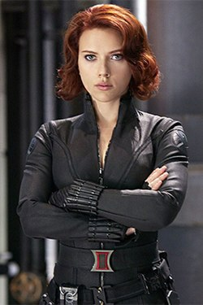

Black Widow
Elite spy, master tactician, and founding Avenger.
Character Overview
Natasha Romanoff first appeared in Tales of Suspense #52 in 1964. She was trained in the Red Room program to become a highly skilled spy and assassin before defecting and joining S.H.I.E.L.D.
As a founding Avenger, she played a crucial role in protecting Earth and ultimately sacrificed herself during the events of Avengers: Endgame.
Skills and Abilities
- Expert martial artist
- Advanced espionage training
- Weapons specialist
- Strategic intelligence and infiltration